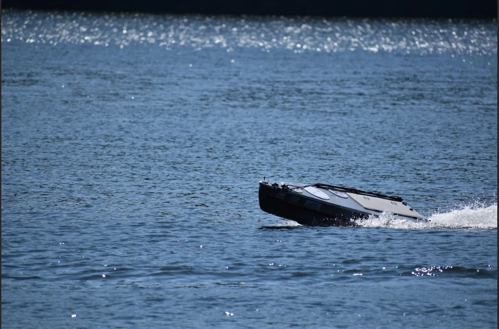
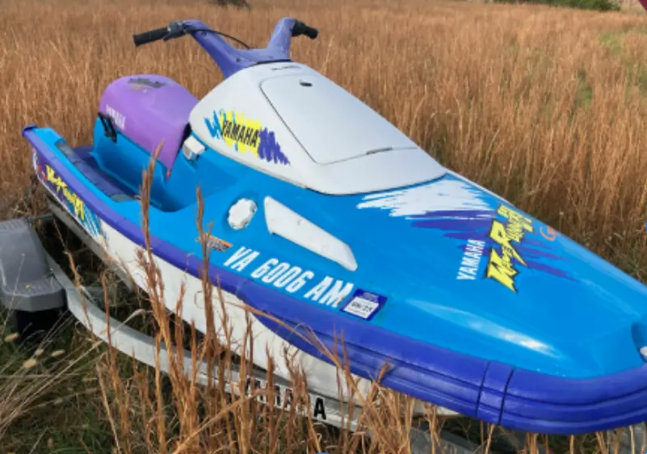

Our Fleet

Propeller
High-pitch underwater propeller optimized for maximum electric torque and speed.
Dual Rudder System
High torque rudder system driven by a 4 bar linkage for quick turns.
Watertight Powertrain and Electronics
Waterproof electronics and powertrain compartment housing the 8KW brushless DC motor, 48V LiPO batteries, and navigation hardware.
Navigation Sensors
GPS, Compass, Camera, and IMU sensors for autonomous pathfinding.
Theseus
Autonomous MotorboatTheseus is our high speed autonomous electric motorboat built for Promoting Electric Propulsion (PEP) races and obstacle avoidance. It features a high power electric powertrain, hydrodynamic fittings to optimize hull speed, and real-time computer vision buoy/boat tracking systems.
Lumpy
Autonomous SailboatLumpy is our current autonomous sailing vessel, designed to compete in the International Robotic Sailing Regatta (also known as SailBOT). It features a fiberglass hull, custom-built rigging, and an extremely robust autonomous navigation software package that chooses optimal sailing routes and avoids obstacles in the water.

Mast
Lightweight and high strength mast supporting the main sail amd jib rigging.
Main Sail
Custom aerodynamic wing sail optimized for high lift-to-drag ratios.
The Jib
Front triangular sail used to capture crosswinds and improve maneuverability.
Weighted Keel
Weighted hydrodynamic keel providing self righting stability and resisting drift.

JetSki
Autonomous JetSki ProjectOur newest engineering challenge: converting a standard jetski hull into a fully autonomous, electric jet propulsion vessel. The team is currently designing custom semi solid state battery packs, a robust and safe electrical system to manage the immense power required to drive the jetski, and jet impeller drive coupling.